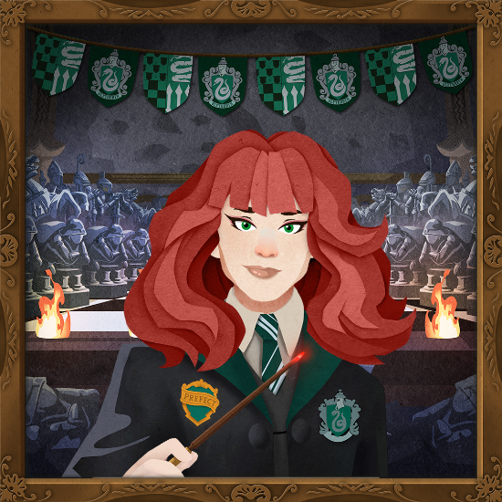
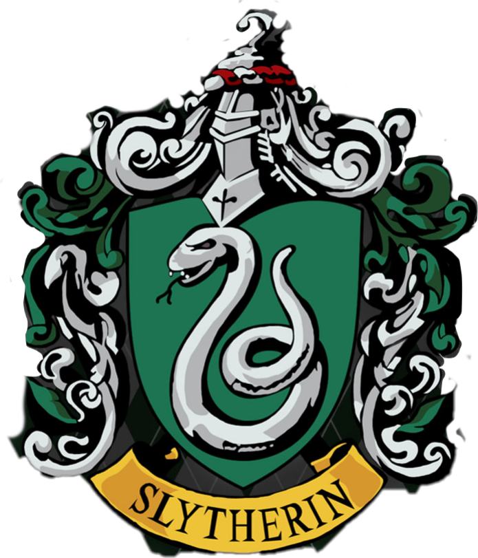

GATE 9 3/4
Introduction

Welcome, Muggle! This is Claire Ashchoo, the Prefect of Slytherin.
During her last year at Hogwarts, her mission is to mingle with Muggle students and write reports on them.
So, you might be able to find her studying at Toronto Metropolitan University, somewhere, maybe?
Origin Story
Born into a prominent, though relatively young, lineage of wizards in Bristol, Claire Ashchoo is much like a rose with thorns, carefully sheltered by her mother. The Ashchoo clan has never allowed her to lift a finger for any strenuous task; by all appearances, she has lived the life of a pampered little princess.
Yet, one should not mistake this for a life of carefree indulgence. Even her "free" time is strictly regimented, mapped out by her father, Mr. Ashchoo. With the pragmatic mindset of a port-city merchant, he has ensured his daughter masters the violin and piano, alongside French and Japanese, all in preparation for her to eventually inherit the family’s vast fortune. He has even gone so far as to arrange a betrothal for her, purely to secure a new business contract, an act that has left Claire harboring a deep, burning resentment toward him for treating her as nothing more than a bargaining chip. And yet, in a cruel twist of irony, there remains a part of her that is strikingly like him.
Character Details

- House: Slytherin
- Wand: Aspen wood with a unicorn core, 13¾", and reasonably supple flexibility
- Patronus: Osprey
- Appearance: Pale skin, light-brown hair just past the shoulders, and green eyes.
- Style: Elaborate, sparkling silver jewellery for weekends, and perfectly pressed House robes at school.
- Signature scent: A unique blend of magnolia and bluebell. She collects perfumes but wears only this one.
- Common Room: Beneath the Black Lake
Random Secret
Explore More
See my Muggle-like work through this forgotten portfolio.
Love the wizarding world? Visit Wizarding World.
Dare to read the secrets? Open the Classified Files.